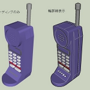
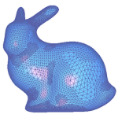

Research Works
This page introduces the history and major topics of research activities related to computer graphics, content creation, digital media, animation, games, interactive modeling, and AI-assisted education.
Research History

This section introduces the transition of research themes that began in 1973 at the Department of Graphic Science, College of General Education, Nagoya University, and continued through research activities at Tokyo Polytechnic University, Saitama University, and Tokyo University of Technology.
Research Topics

Current research focuses on the development of digital content creation technologies for animation and games. The research also covers computer graphics, especially expressive techniques such as non-photorealistic rendering, interactive modeling using freehand sketches, curved surface modeling, and kansei information processing, including color design support.